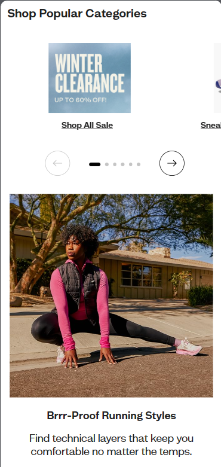

Hick's Law
Zappos
zappos.com Zappos has many products to be shown to users even after they've split those products into categories. However, Hick's law is used to solve this problem by showing to the user the most popular categories of products, making sure a user won't leave their website because (s)he is lost in the big amoung of information. That's the essence of Hick's law: the more choices a user has, the more time (s)he will take to make a decision.
Rule of Thirds
Apple
apple.comIt is easy to see the Rule of Thirds principle being applied here in Apple's website homepage. Their main product is centered in the middle of the grid, being big enough to call user's attention. The subpages that might be accessed also are within the grid, equally spaced and sized. Apple uses the central column in the grid to show its important information, whereas periphery columns are empty, only in black, fading out the main column's background color.
Fitt's Law
Google's main page has evolved over time by implementing the Fitt's law. This law says that a user has a mistake rate increased if smaller options show up to him/her, which may increase the reputation of the product in the user's sight. However, once the options are bigger, the user has a mistake rate diminished. That's why Google has a big search bar located right in the middle of the screen.The probability the user will make a mistake when searching on Google is unlikely.